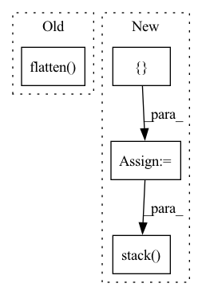

Pattern ID :21961
Before Change
element_numbers = np.arange(output_elements).reshape(
output_columns, output_rows)
strided_rows = element_numbers[::stride, ::stride].flatten()
// TODO: finish me!
indices = convolution_matrix.coalesce().indices().numpy()
values = convolution_matrix.coalesce().values().numpy()After Change
indices = convolution_matrix.coalesce().indices().numpy()
values = convolution_matrix.coalesce().values().numpy()
mask = []
strided_row_indices = []
non_zero_row_entries = indices[0, :]
counter = 0
previous_entry = 0
for entry in non_zero_row_entries:
if entry in strided_rows:
mask.append(True)
if previous_entry != entry:
counter += 1
strided_row_indices.append(counter)
else:
mask.append(False)
previous_entry = entry
mask = np.array(mask)
strided_row_indices = np.array(strided_row_indices)
strided_col_indices = indices[1, mask]
strided_indices = np.stack( [strided_row_indices, strided_col_indices], 0)
strided_values = values[mask]
strided_matrix = torch.sparse_coo_tensor(
strided_indices, strided_values, dtype=dtype).coalesce()
In pattern: SUPERPATTERN
Frequency: 3
Non-data size: 4
Instances Fragment ID: 69821784
Project Name: v0lta/pytorch-wavelet-toolbox
Commit Name: f659f1a0eacbd03f1438d0c70729ce7e95eb9ea0
Time: 2021-09-13
Author: moritz.wolter@scai.fraunhofer.de
File Name: src/ptwt/matmul_transform_2d.py
M Class Name: AnonimousClass
N Class Name: AnonimousClass
M Method Name: construct_strided_conv2d_matrix(5)
N Method Name: construct_strided_conv2d_matrix(5)
M Parent Class:
N Parent Class:
M File Name: src/ptwt/matmul_transform_2d.py
N File Name: src/ptwt/matmul_transform_2d.py
M Start Line: 80
M End Line: 113
N Start Line: 88
N End Line: 127
Before Change
// input should be (seq_len, batch, input_size)
output, h_n = self.rnn(x.unsqueeze(1))
output = self.fc(output.flatten() )
// print(output)
// return torch.mean(output, dim=0)
return outputAfter Change
self.fc = nn.Linear(100, 1)
def forward(self, st_maps, target):
output_per_clip = []
// so as to reflect a batch_size = 1
st_maps = st_maps.unsqueeze(0)
for t in range(st_maps.size(1)):
with torch.no_grad():
x = self.resnet18(st_maps[:, t, :, :, :])
// collapse dimensions to BSx512 (resnet o/p)
x = x.view(x.size(0), -1)
// output dim: BSx1
x = self.fc_resnet(x)
// For now since we"re working with BS = 1, lets collapse that dimension
output_per_clip.append(x.squeeze(0))
// input should be (seq_len, batch, input_size)
output_seq = torch.stack( output_per_clip, dim=0) .transpose_(0, 1)
gru_output, h_n = self.rnn(output_seq.unsqueeze(1))
return output_seq, gru_output.squeeze(0)
Fragment ID: 69821788
Project Name: anweshcr7/rhythmnet
Commit Name: 5486b317570359a6ab1971196350ee70894b19db
Time: 2021-02-02
Author: anwesh.marwade@beyondsports.nl
File Name: src/models/rhythmNet.py
M Class Name: RhythmNet
N Class Name: RhythmNet
M Method Name: forward(3)
N Method Name: forward(3)
M Parent Class: nn.Module
N Parent Class: nn.Module
M File Name: src/models/rhythmNet.py
N File Name: src/models/rhythmNet.py
M Start Line: 25
M End Line: 32
N Start Line: 32
N End Line: 48
Before Change
def get_logits(self, _input: torch.Tensor, randomized_smooth=False, sigma=0.1, n=100, **kwargs):
if randomized_smooth:
_input_noise = add_noise(repeat_to_batch(_input, batch_size=n), std=sigma).flatten(end_dim=1)
return self.model(_input_noise, **kwargs).view(n, len(_input), self.num_classes).mean(dim=0)
else:
return self.model(_input, **kwargs)
After Change
def get_logits(self, _input: torch.Tensor, randomized_smooth=False, sigma=0.1, n=100, **kwargs):
if randomized_smooth:
_list = []
for _ in range(n):
_input_noise = add_noise(_input, std=sigma)
_list.append(self.model(_input_noise, **kwargs))
return torch.stack( _list) .mean(dim=0)
// _input_noise = add_noise(repeat_to_batch(_input, batch_size=n), std=sigma).flatten(end_dim=1)
// return self.model(_input_noise, **kwargs).view(n, len(_input), self.num_classes).mean(dim=0)
else: Fragment ID: 69821795
Project Name: ain-soph/trojanzoo
Commit Name: c27bc51ba9150d882f240c599f52c8c475844eb8
Time: 2020-08-24
Author: ain-soph@live.com
File Name: trojanzoo/model/model.py
M Class Name: Model
N Class Name: Model
M Method Name: get_logits(5)
N Method Name: get_logits(5)
M Parent Class:
N Parent Class:
M File Name: trojanzoo/model/model.py
N File Name: trojanzoo/model/model.py
M Start Line: 159
M End Line: 160
N Start Line: 159
N End Line: 163